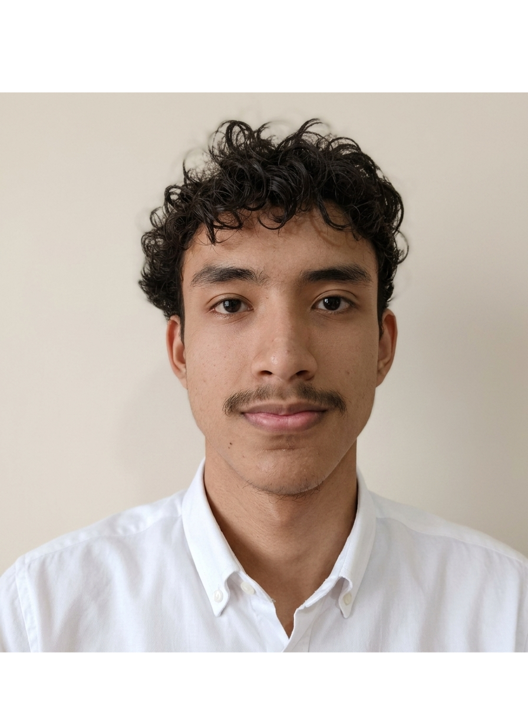

Yassir Batista
Correo personal: yassirbatista1@gmail.com
Correo institucional: yassir-n.batista-p@up.ac.pa
Tel: 6366-5262
Perfil
Estudiante universitario con interés en el desarrollo web, la programación básica y el análisis económico. En proceso de formación en ingeniería económica con enfoque en tecnología, con interés en el desarrollo de sistemas en la nube, desarrollo de videojuegos y aplicaciones interactivas. También con experiencia básica en el uso de herramientas y servicios como Podman, Jellyfin y Nextcloud para la gestión y despliegue de entornos digitales.
Educación
Universidad de Panamá
Licenciatura en Ingeniería Económica - En curso
Ingreso: 2024
Asignaturas: programación básica, matemáticas, economía general.
Centro Educativo Gatuncillo
Educación Media - Bachiller en Ciencias
Graduación: 2023
Habilidades
- HTML y CSS básico
- Conocimientos iniciales de JavaScript
- Análisis básico de datos económicos
- Trabajo en equipo en proyectos académicos
- Resolución de problemas simples
Idiomas
Español - Nativo
Inglés - Básico/intermedio
Experiencia
Proyecto académico - Desarrollo de sitio web
Creación de un sitio web estático como parte de un laboratorio universitario, utilizando HTML y CSS. Incluyó navegación entre páginas, estructura de contenido y diseño básico.
Proyecto escolar - Análisis básico económico
Elaboración de trabajos en grupo donde se analizaron datos económicos simples y se presentaron conclusiones en exposiciones académicas.
Actividades académicas
Participación en tareas prácticas relacionadas con programación y economía dentro del entorno educativo.